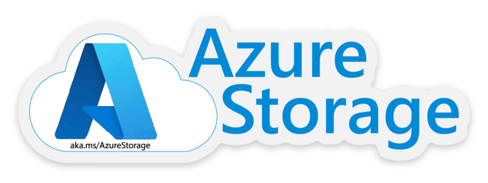

Welcome to the Azure Storage Content Repository. In this repository we have compiled the content that we have found helpful on our engagements with customers.
This repository is intended to be a supplement to the official Azure Storage documentation with additional specialized content and links to non-Microsoft generated content. We encourage you to review the official documentation also.
Storage Services #
Blob Storage #
Massively-scalable object storage for unstructured data
- Cost-effective for massive volume
- Tiered storage options
- Single infrastructure with global reach
Azure Disks #
Persistent, high-performance disk storage for every workload
- Low latency, high throughput
- Industry-leading, single-instance service-level agreement
- Enterprise-grade durability
Azure Files #
Simple, distributed, cross-platform file system
- Lift and shift migration
- Simple and inexpensive
- Move data to cloud with no coding
Data Lake Storage #
Secure, massively scalable data lake storage.
- High performance with massive scale optimized for analytics workloads
- Enterprise grade security with AAD integration and fine-grained ACLs
- Eliminates data silos with object storage and filesystem endpoints against the same data
Azure Backup #
Secure and cost effective cloud backup
- Native support for Azure workloads
- Lower and predictable TCO
- Rich management using zero-infrastructure solutions
Azure Data Box #
Multiple offline and online solutions to move your data to Azure
- Various offline capacity appliances when networking isn’t an option
- Online appliances offer storage gateway and AI-enabled edge computing
- All appliances secure and NIST compliant
Azure Queues #
Durably store messages for asynchronous processing
- Separate communication functions for better durability
- Scale for bursts to absorb unexpected traffic
- Build in resilience to maintain integrity of your workload
Azure NetApp Files #
Powerful, hybrid Azure file shares powered by NetApp
- Sophisticated enterprise-grade data management
- Highly secure and compliant
- Rich hybrid cloud experience
Azure HPC Cache #
Run high-performance computing (HPC) workloads in the cloud
- Scalable, high-performance file caching
- Hybrid or all-in Azure HPC
- Flexibility with multi-cloud, multi-protocol support
Storage Pillars #
This repository is organized into 5 pillars as follows, click on the pillar name to get more information about that pillar:
| Pillar | Description |
|---|---|
| Analytics | TBD |
| Application and User Data | TBD |
| Backup And Archive | TBD |
| HPC IoT and AI | TBD |
| Tools and Utilities | Helpful 1st and 3rd party tools and utilities |
Contributing #
This project welcomes contributions and suggestions. Most contributions require you to agree to a Contributor License Agreement (CLA) declaring that you have the right to, and actually do, grant us the rights to use your contribution. For details, visit https://cla.opensource.microsoft.com.
When you submit a pull request, a CLA bot will automatically determine whether you need to provide a CLA and decorate the PR appropriately (e.g., status check, comment). Simply follow the instructions provided by the bot. You will only need to do this once across all repos using our CLA.
This project has adopted the Microsoft Open Source Code of Conduct. For more information see the Code of Conduct FAQ or contact opencode@microsoft.com with any additional questions or comments.
Legal Notices #
Microsoft and any contributors grant you a license to the Microsoft documentation and other content in this repository under the Creative Commons Attribution 4.0 International Public License, see the LICENSE file, and grant you a license to any code in the repository under the MIT License, see the LICENSE-CODE file.
Microsoft, Windows, Microsoft Azure and/or other Microsoft products and services referenced in the documentation may be either trademarks or registered trademarks of Microsoft in the United States and/or other countries. The licenses for this project do not grant you rights to use any Microsoft names, logos, or trademarks. Microsoft’s general trademark guidelines can be found at http://go.microsoft.com/fwlink/?LinkID=254653.
Privacy information can be found at https://privacy.microsoft.com/
Microsoft and any contributors reserve all other rights, whether under their respective copyrights, patents, or trademarks, whether by implication, estoppel or otherwise.